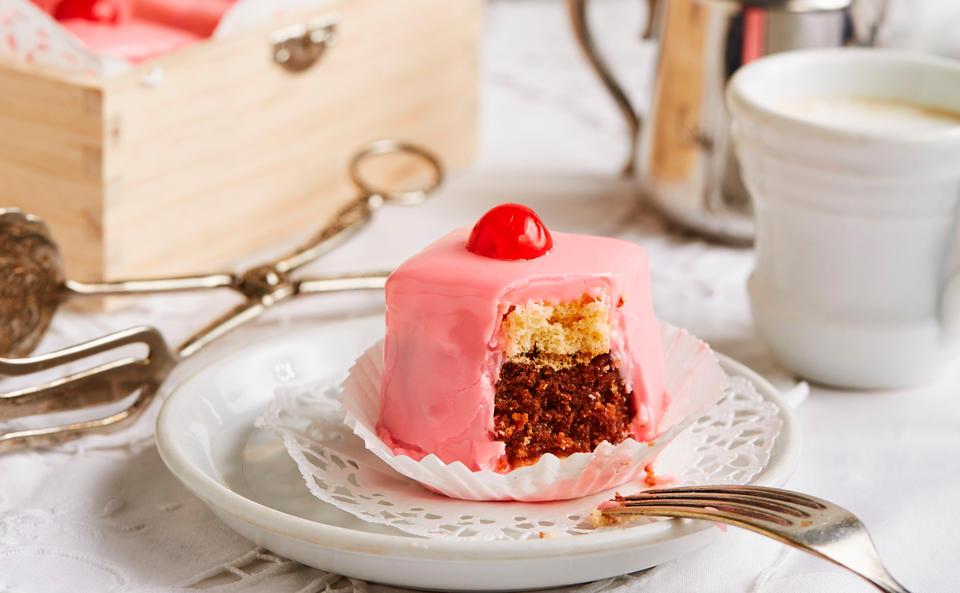

Punschkrapferl (punch cake) is a classic Austrian confection of pastry
with a fine rum flavor. It is similar to the French pastry, the petit
four.
Today, one can find Punschkrapfen in most pastry shops and
bakeries in Austria - but we have the best.